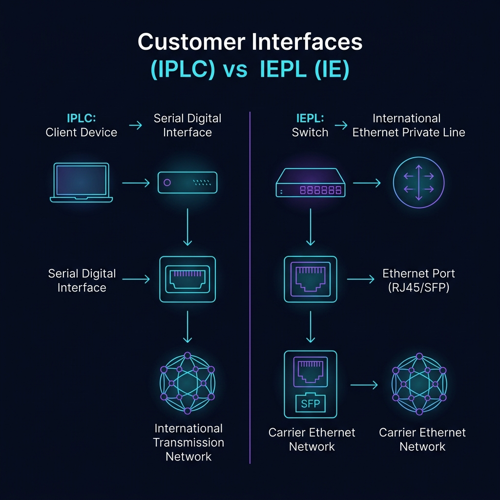
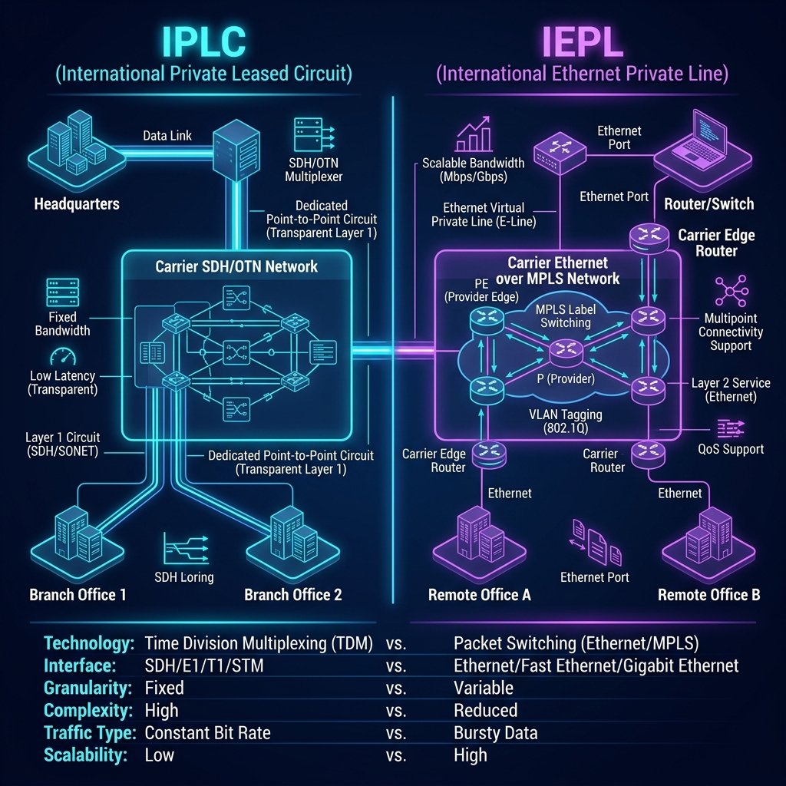
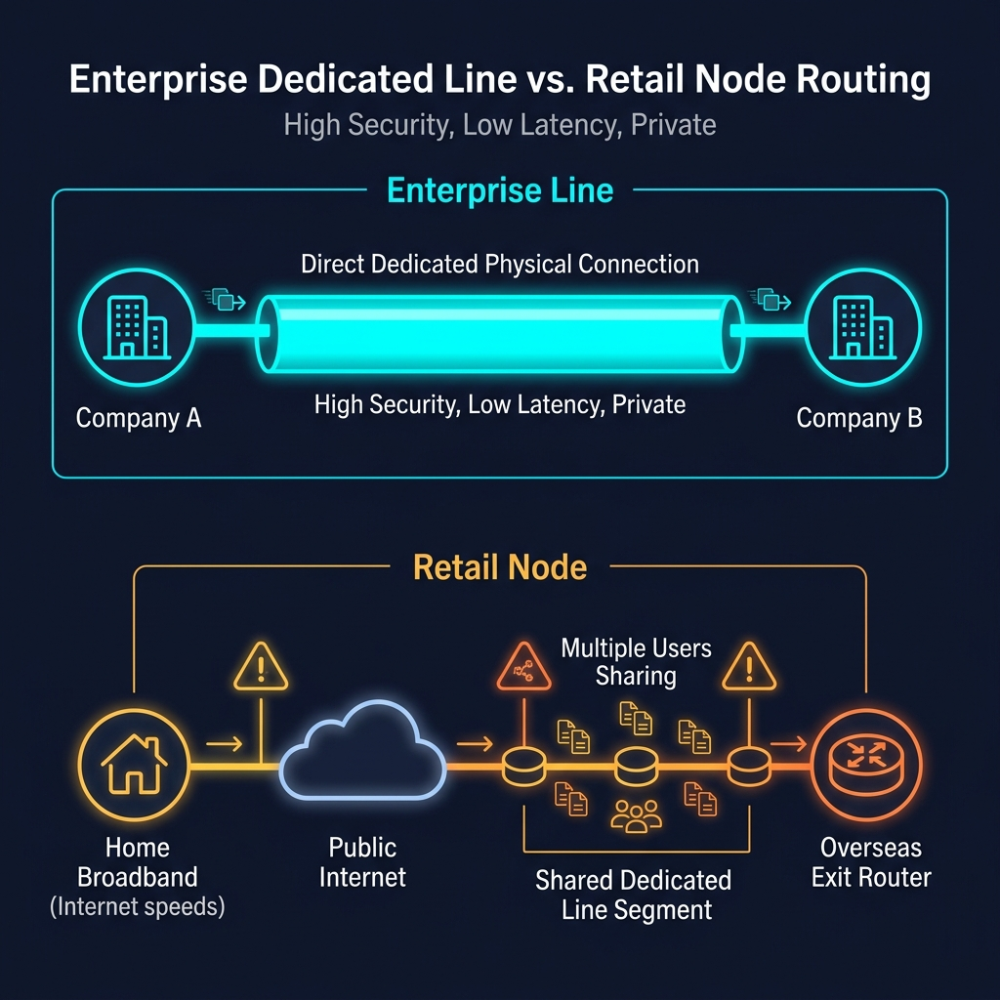
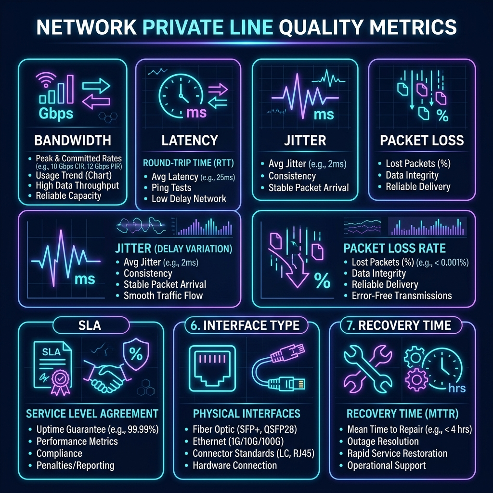

在跨境企业组网、数据中心互联以及商用加速节点（通常称为“中转机场”）的线路配置中，我们经常会接触到 IEPL 和 IPLC 这两个概念。两者均属于运营商级别的国际专用物理连接通道，能够在不同国家或地区的节点之间提供高稳定性、低延迟的优质网络传输服务。然而，从技术标准、接口类型以及业务灵活性来看，它们并不能完全等同。
IPLC 是“International Private Leased Circuit”的缩写，通常译为国际私有租用电路（即国际专线）；IEPL 是“International Ethernet Private Line”的缩写，译为国际以太网专线。两者都能在异地数据中心、办公地点及网络节点间建立受管理的连接，提供专属的带宽及服务等级保障。根据 中国联通国际官方介绍，这些产品致力于提供端到端的点对点或多点专用数据连接，并提供全天候监控保障。
一、 IPLC 是什么
IPLC 的核心是为客户交付一条固定的物理层国际通信电路。传统的 IPLC 主要建立在运营商的同步数字体系（SDH）和波分复用（WDM）传输网络之上，强调完全透明的物理层数据承载，两端客户独享分配到的时隙与物理电路。
根据 中国电信国际官网 对 IPLC 的描述，该服务依托全球 SDH/WDM 骨干网，为跨国企业提供高安全、高保证的独享带宽，实现端到端的透明信道。
其基本的物理级结构可简化为：
IPLC 更像是一条由运营商严格管理的多路复用数字信道。客户可以在该信道上承载传统的语音、点对点视频，或者自建非 IP 协议的底层数据。由于其“物理透明”的特性，传统 IPLC 极度适合需要固定时延、采用传统数字通信接口（如 V.35 接口）的企业专用点对点连接场景。更多详细细节，请参见我们的专文：什么是 IPLC 专线？其工作原理与技术特点详解。
二、 IEPL 是什么
IEPL 是在国际专用连接的基础之上，直接向客户交付标准以太网（Ethernet）接口的网络专线服务。当企业两端通过路由器或交换机接入 IEPL 后，运营商将在底层的传送网中承载以太网 MAC 帧，使得异地两端的网络能够如同在一个本地局域网（LAN）内进行通信。
根据 中国电信国际以太网专线说明，IEPL 专线基于 MSTP（多业务传送平台）及 OTN 技术，可以提供灵活的点对点及点对多点以太网接入服务。在实际部署中，部分运营商也常借助 MPLS（多协议标签交换）或 Ethernet over MPLS 等二层封包技术来实现 IEPL。

IEPL 的最大特点是接口与现代企业 LAN 深度兼容，支持直接使用标准的 RJ45 以太网口或 SFP 光口接入企业设备，这使得它的带宽调整、分支扩容和数据中心互联（DCI）在灵活性上大幅领先于传统 IPLC。
三、 IEPL 与 IPLC 核心区别
为方便对比，我们将 IEPL 与 IPLC 的主要区别总结在下表中：
| 对比项目 | IPLC (国际私有租用电路) | IEPL (国际以太网专线) |
|---|---|---|
| 主要交付形态 | 透明数字时隙电路 (物理层透明) | 以太网虚拟专用链路 (数据链路层二层) |
| 典型用户接口 | V.35 等传统数字接口，需加装光猫/调制器 | Ethernet RJ45 电口 或 SFP/SFP+ 光口 |
| 网络层级 | OSI 第 1 层 (物理层透明物理传输) | OSI 第 2 层 (数据链路层以太网服务) |
| 带宽调整与扩展 | 扩容繁琐，可能需要更改物理接口与调制设备 | 软件按需升级，无需更换接口设备，极度灵活 |
| 连接方式 | 固定点对点 (P2P) 连接为主 | 支持点对点 (P2P)、点对多点 (P2MP) |
| 应用场景 | 传统语音、自建协议通信、固定点对点中转 | 数据中心互联、企业异地 LAN 扩展、大带宽业务 |
| 管理与服务 SLA | 承诺可用性与延迟的运营商级 SLA 保障 | 承诺可用性与延迟的运营商级 SLA 保障 |

在实践中，不同运营商对这些术语的叫法稍有出入。有些会将 IEPL 归为“以太网 IPLC”，或者将两者统一纳入专线服务框架中。例如，根据 中国联通国际欧洲服务条款，其 IEPL/IPLC 都是作为受管理的专线网络来销售，最终的具体电路类型、交付接口、承诺带宽均在订购单中详细规约。
四、 为什么 IEPL 更适合现代网络
现代商业网络几乎 100% 运行在以太网协议之上。服务器、三层交换机、防火墙和主流路由器都原生配备以太网光电接口。因此，选择 IEPL 能让企业免去采购和配置昂贵的传统光端信号调制设备。
此外，IEPL 在大局域网延伸（二层网络打通）上优势明显。例如，跨国企业可以直接利用 IEPL 的二层承载特性在香港与深圳的数据中心之间跑 VLAN 标记、进行二层容灾备份，且运营商支持的带宽跨度极广（支持从 2Mbps 弹性扩容至 100Gbps 超大带宽）。
⚡ 注意：延迟的决定要素
IEPL 在应用层表现出来的快，并不代表它能“突破物理限制”。一条专线的延迟依然取决于光缆的物理物理距离（如深港专线通常为 3-5ms，沪日专线为 25-30ms），以及运营商底层所选择的海缆走向、光纤折射率与中转设备的转发性能。IEPL 的优势在于它的以太网兼容性、扩展效率以及现代化运维管理。关于更多专线技术底层的运作，可参考我们的：什么是 IPLC/IEPL 国际专线？专线技术原理解密。
五、 专线是否等于加密线路
很多人认为“走了专线，数据就绝对安全、绝不会泄露”。这种看法是不全面的。“专线”或“私有电路”的核心本质是物理隔离与资源独享，它使得你的流量完全运行在运营商为你划分出来的专属信道内，与公网的普通互联网流量是物理/逻辑隔离的。
但隔离并不等于数据已被自动“高强度加密”。IEPL 和 IPLC 只是透明的传输管道。如果黑客在物理机房、光缆交接箱实施物理光纤监听，或运营商内部审计设备进行流量监控，那么未加密的明文数据依然是可见的。
因此，要实现完整的传输安全，企业或机场服务商必须在业务层（三层或七层）使用 TLS 协议，或在两端网关设备之间建立 IPsec VPN 隧道等加密通道。专线提供的高可用与 0 丢包是为了消除网络拥堵，而数据安全仍取决于接入端设备的安全策略、访问控制和加密强度。
六、 机场宣传中的专线应如何理解
很多零售网络加速服务（“机场”）会宣称自己的节点全部采用 **IEPL 顶级专线**。这与企业异地两端拉设的独享专线有很大差异。
企业购买专线是真正拉一条点对点的物理或二层专线，而机场的架构可以简化为：

用户的家庭宽带到深圳的入口服务器，这一段依然走的是普通的公共互联网；境外出口服务器到目标海外网站（如 OpenAI、Google），这一段也是走的境外公网骨干网。只有“深圳入口 → 境外出口”这一跨境的骨干段，租用的是企业级 IEPL 或 IPLC 的一部分共享带宽。当出站后，为了在 AI 平台、流媒体等服务顺利通关，还需要配合境外本地的原生 IP 才能正常访问。技术细节可以参见：原生 IP 与双栈 IP 核心区别科普。
而且，机场租用的这条专线往往会被划分成成百上千个并发连接，分配给成千上万个终端用户共同分享。真正的专线会涉及到严苛的测试指标、正式的商业合同和专用的 SLA 保障（例如 中国电信国际服务协议说明 中约定的严苛安装验收流程与线路维护通告机制）。所以，零售的“专线节点”只是数据传输的部分路段享受到了专线级别的转发，并不是用户到目标网站全程独享物理光纤。这种线路通常被称为“共享专线中转”或“国内中转线路”，具体技术可参考：国内中转线路（Relay）技术原理与作用。
七、 如何判断线路宣传是否可信
鉴于市场上有很多采用普通公网中转伪装“专线”的现象（特别是一些劣质低价机场，容易跑路，避坑策略请查看 跑路机场风险黑名单），用户可参考以下指标和方法来甄别：

- 晚高峰抖动与丢包率测试： 普通的公网线路（即使有 CN2 GIA/BGP 优化）在晚上 20:00-23:00 也会受到严重的出海带宽挤压，从而表现出高丢包与高延迟。而真专线通过物理隔离彻底免受公网拥堵影响，晚高峰丢包率应该恒定在 0% 附近，延迟应保持平稳（抖动小于 2ms）。测试方法可参考 节点高延迟与慢速排查指南。
- Tracert 路由追踪： 使用 Tracert 工具进行路由追踪。如果是真专线，本地流量到达国内中转入口（如深圳）后，下一跳会直接跳转到香港机房的内网网段（如 `10.x.x.x` 或其他局域网内网 IP），且中间没有显示任何中国电信 202.97/59.43 等公网国际出口路由器 IP。
- 节点故障共死现象： 如果机场的“深港IEPL”、“沪日IPLC”在同一时刻大面积离线，或者一断网所有节点全部失效，往往意味着它们共享了同一个物理中转入口或单线单入口，这有助于判断服务商的备份和底层承载规模。
八、 应该选择 IEPL 还是 IPLC
对于企业客户而言：
- IPLC 专线： 适合传输需要高度物理层透明承载的数据、传统的语音及电话系统，或采用老旧串行通信接口的点对点长途电路。
- IEPL 专线： 适合大多数现代互联网和云业务场景。如果你的连接设备是标准的以太网交换机、路由器，需要高性价比的带宽弹性扩展，或需要跨区域数据中心进行二层大局域网互联，IEPL 是首选。
正如电信盈科（HKT）在其 HKT 官方产品页面 中指出的那样，两类国际电路都是为了跨国商业连接而设计，旨在帮助企业建立健壮、稳定、可靠的数据、语音和视频应用骨干。
九、 总结
IEPL 和 IPLC 均是当下最顶级的跨境数据承载专线：
IPLC 侧重底层的物理电路透明承载，而 IEPL 则更契合现代以太网接口、支持更加灵活的带宽动态调度。
在选择和租用时，用户与企业不应只拘泥于其技术名词的宣称，而应当具体看物理交付接口、承诺带宽（SLA）以及实际的高峰期表现（丢包率和抖动控制）。而对于机场节点用户，应当树立理性消费观念，要明白即使底层专线是真的，但在大量人共享带宽以及首尾两端依旧走公网的限制下，实际体验仍受多重因素影响。购买时建议选用信誉良好、具有SLA保障的 稳定专线机场 才能保障长期的体验。